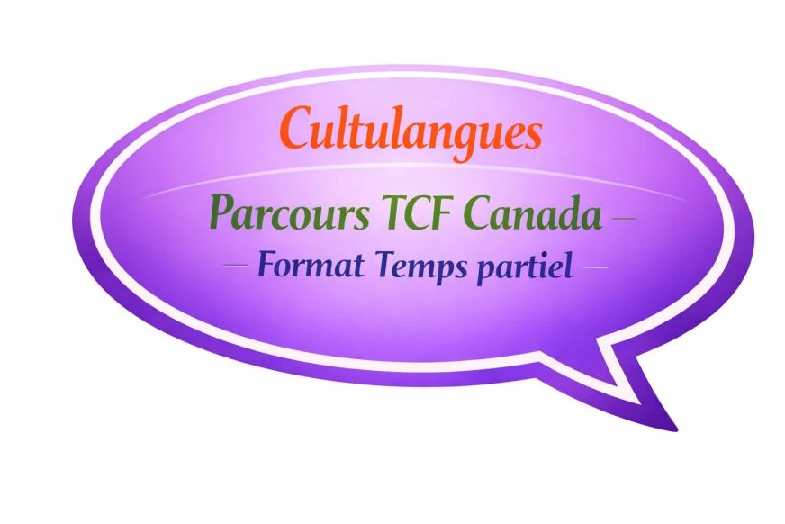
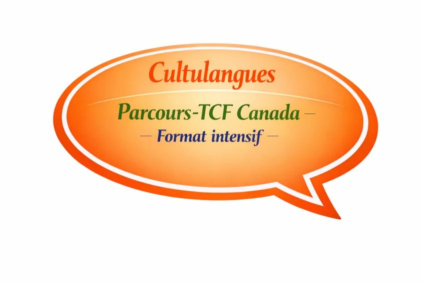

Le TCF Canada est un test officiel requis pour les démarches d'immigration auprès d'IRCC. Le test évalue votre capacité à comprendre et communiquer en français dans des situations du quotidien, à l'oral comme à l'écrit.
Une préparation structurée et claire pour obtenir le meilleur score possible pour votre immigration IRCC.
Stratégies spécifiques pour maximiser vos points dans chaque compétence évaluée par IRCC.
Maximum 5 participants pour un accompagnement personnalisé et des interactions de qualité.
Compréhension écrite, comprehension orale, expression écrite et expression orale — nous couvrons tout.
Un cadre bienveillant et clair pour progresser sereinement et gagner en confiance.
Le TCF Canada est requis pour les démarches d'immigration auprès d'IRCC.
Obtenez la preuve de niveau de français requise pour votre demande d'immigration au Canada fédéral.
Atteignez le niveau CLB requis pour votre programme d'immigration avec un score compétitif.
Une préparation claire et rassurante pour démarrer votre vie au Canada en toute confiance.
Le TCF Canada est un test officiel requis pour les démarches d'immigration auprès d'IRCC, mais rassurez-vous : avec une préparation adaptée, il devient beaucoup plus accessible.
Le test évalue votre capacité à comprendre et communiquer en français dans des situations du quotidien, à l'oral comme à l'écrit.
Chez Cultulangues, nous vous guidons pas à pas pour que vous sachiez exactement quoi faire, comment répondre et comment gérer votre temps le jour de l'examen.
Le TCF Canada évalue quatre compétences essentielles :
Notre objectif est simple : vous aider à gagner en confiance, à progresser sereinement et à obtenir le meilleur score possible pour votre projet d'immigration.
Deux formats pour le TCF Canada, adaptés à votre rythme et à vos objectifs.

Préparez-vous sereinement au TCF Canada pour votre démarche d'immigration auprès d'IRCC, à un rythme léger et régulier.

Une préparation intensive pour maximiser vos points IRCC et obtenir votre niveau rapidement.
Un test gratuit pour déterminer votre niveau et vous orienter vers le parcours adapté.
Partiel (14 sem.) ou intensif (7 sem.) selon votre emploi du temps et vos objectifs.
Simulations, stratégies et accompagnement pour aborder le test en toute confiance.
Contactez-nous pour un conseil personnalisé gratuit ou réservez votre cours d'essai.
Réservez maintenant →